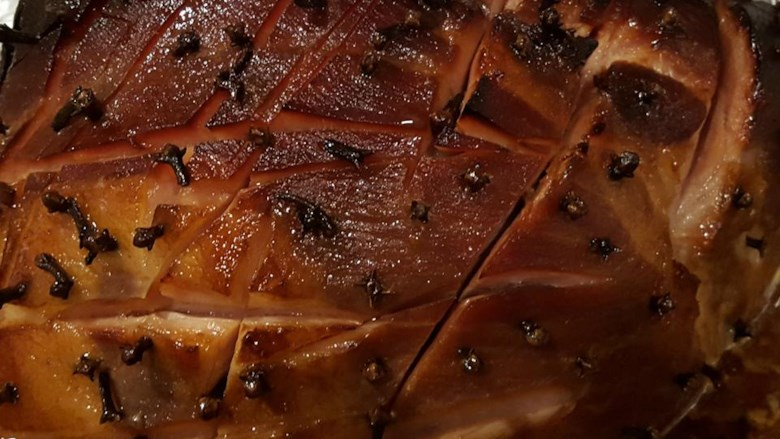

Honey Butter Yule Ham

Description
The ham yields a moist, sweet taste. The honey butter baste makes it extra right.
Ingredients
- 1 (12 pound) bone-in ham
- ¾ cup butter, softened
- ¾ cup honey
- ½ cup whole cloves (Optional)
Steps
- Preheat the oven to 350 degrees F (175 degrees C).
- Cut 1 inch deep criss-crosses into the flat side of the ham. In a small bowl, mix together the butter and honey.
Slather onto the ham, making sure to get in the crevices too.
Insert cloves into the ham if desired. Place in a roasting pan.
- Bake for 4 hours in the preheated oven, or 20 minutes per pound.
The internal temperature should reach 160 degrees F (70 degrees C).
Baste every 20 minutes with the drippings. Remove, slice, serve, savor.
Return to main page